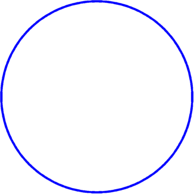
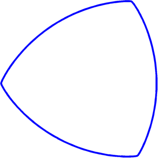
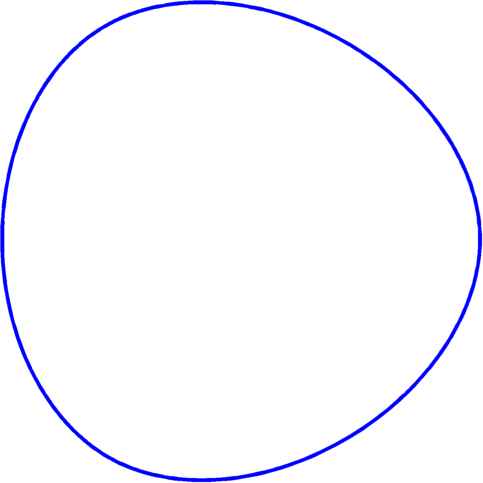
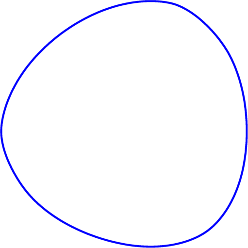
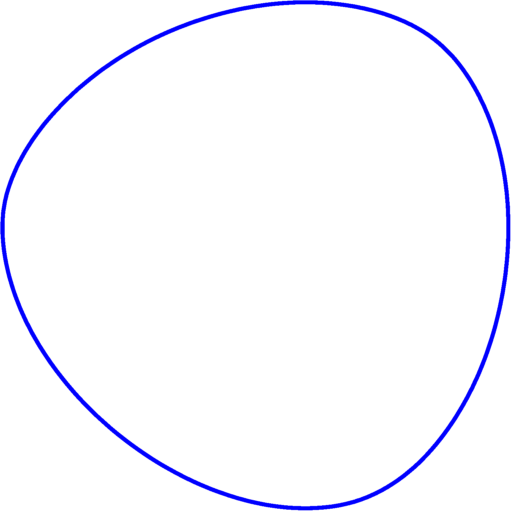
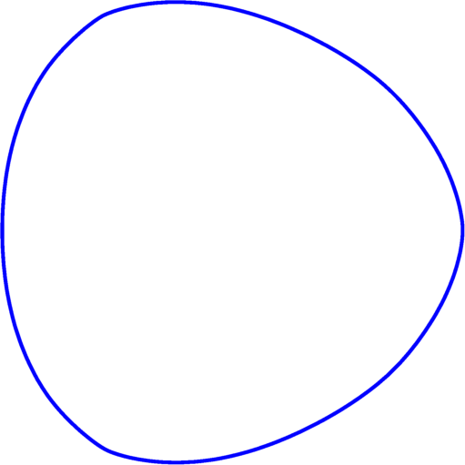
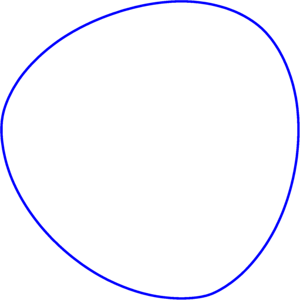
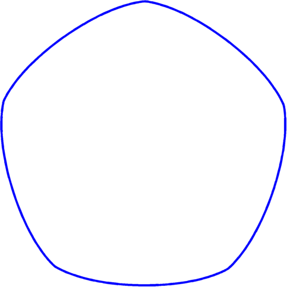

Optimization of eigenvalues - constant width constraint
Collaboration with Antoine Henrot and Ilaria Lucardesi. Preprint available here. In addition to the numerical algorithm presented below, in the preprint you can find information on when is the disk a local minimizer when optimizing the eigenvalues under constant width constraint.
When optimizing the eigenvalues of the Dirichlet Laplace operator different constraints are used (like area/volume or perimeter). Certain theoretical and numerical studies have been performed in these cases. I mention my numerical experiments for the perimeter constraint (method 1, method 2) and the area constraint in 2D (method 1, FreeFem). There is another constraint which can be imposed: that the variable shape has constant width (that is the distance between any two parallel tangent planes which bound the figure is constant).
The constant width constraint poses problems from both theoretical and numerical aspects. When studying variations of shapes of constant width we must pay attention to the fact that if we perturb a part of the boundary then this has long range effects, since any points which have diameters touching this part of the boundary must also be perturbed. This aspect also translates to numerical computations.
There are quite a few questions regarding the optimization of the eigenvalues in the class of bodies of constant width.
- It can be proved that the first eigenvalue $\lambda_1(\Omega)$ is minimized by the ball when $\Omega$ has constant width.
- Is it true that in 2D the Reuleaux triangle maximizes $\lambda_1$?
- The disk seems to be a likely candidate as a minimizer even for $k \geq 2$. Is it true that $\lambda_k(\Omega)$ is always minimized by the disk?
I will try to present below a numerical method which tries to give some hints on the answers to these questions. Even if perturbations of shapes of constant width are not easy to work with, there is a way to parametrize the shapes of constant width in 2D which eliminates this difficulty. If we use the parametrization of convex sets with the help of the support function then the constant width condition becomes simple to implement.
For an introduction to the support function you can check out the Wikipedia page or the following articles: Lachand-Robert and Oudet, Bayen, Lachand-Robert and Oudet, Bayen and Henrion. The recent article of Pedro Antunes inspired the method used below.
The idea is to parametrize the support function $p$, which is a $2\pi$ periodic function, into a Fourier series. Then we make the problem discrete by truncating the Fourier series $p(\theta) = a_0+\sum_{i=1}^n a_i \cos(i\theta)+\sum_{i=1}^n b_i \sin(i\theta)$. It is possible to express the coordinates of boundary points in terms of $\theta$: $$ \begin{cases} x(\theta) = p(\theta) \cos \theta-p'(\theta)\sin \theta \\ y(\theta) = p(\theta)\sin\theta +p'(\theta)\cos \theta.\end{cases}$$ Thus computing the tangent and normal vectors is straightforward: $T(\theta) = (p+p'')(-\sin \theta,\cos \theta)$ and $N(\theta) = (p+p'')(\cos \theta,\sin \theta)$. Thus the convexity of the shape can be characterized in terms of the support function: $p+p''\geq 0$. Bayen and Henrion propose a setting which incorporates directly this constraint. Although it is useful, it requires special numerical tools and may not adapt to the case when the functional to optimize is more complicated than the area functional. Antunes, on the other hand, proposes to impose the convexity constraint by requiring that $p+p''$ is non-negative on a discretization of $[0,2\pi]$. This is quite natural and not too difficult to implement as a constraint optimization problem with 'fmincon' in Matlab.
The constant width condition may be expressed as $p(\theta)+p(\pi+\theta) = \text{const.}$ which in the end requires simply that the coefficients with even index need to be zero.
The eigenvalues of the Dirichlet Laplace operator are computed using MpsPack and the optimization is done using a gradient based approach: we compute the gradient with respect to every Fourier coefficient. We present below some of the results obtained.
This is still a work in progress so some of the results below may change over time... The first table contains the best shapes obtained numerically. The second table contains the values corresponding to these shapes. Note that we always consider shapes of width $2$. In order to compare, we also put the values of the eigenvalues for the disk of radius $1$ and the Reuleaux triangle of diameter $2$.
Values will be completed in the tables in a short while...
Remarks: We note that for $k \in \{6,15\}$ we find minimizers which have lower eigenvalue than the disk. I guess it is not a coincidence that these $k$ correspond to eigenvalues which are simple on the disk. One may try to prove that in these cases the disk is not optimal. The next such eigenvalue corresponds for $k=30$. Here the numerical algorithm also finds a shape with a lower eigenvalue than the disk; additional computations will be made to make sure this is the case.
Concerning the maximizers, we did not obtain any shape which gives a higher $k$-th eigenvalue than the Reuleaux triangle. On the other hand studying the maximizers numerically becomes more challenging since we necessarily have singularities (points with very large curvature) which do not behave well numerically.
| $k$ | minimizer | maximizer |
| $\{1,2,3,4,5\}$ $\{7,8,...,14\}$ |  |
 |
| 6 |  |
|
| 9 |  |
|
| 10 |  |
|
| 13 |  |
|
| 14 |  |
|
| 15 |  |
| $k$ | min eig. | disk eig. | max eig. | Reuleaux eig. |
| $1$ | $5.783$ | $5.7831$ | ||
| $2$ | $14.682$ | $14.6819$ | ||
| $3$ | $14.682$ | $14.6819$ | ||
| $4$ | $26.375$ | $26.3746$ | ||
| $5$ | $26.375$ | $26.3746$ | ||
| $6$ | $30.453$ | $30.4713$ | ||
| $7$ | $40.706$ | $40.7065$ | ||
| $8$ | $40.706$ | $40.7065$ | ||
| $9$ | $49.080$ | $49.2184$ | ||
| $10$ | $49.084$ | $49.2184$ | ||
| $11$ | $57.583$ | $57.5829$ | ||
| $12$ | $57.583$ | $57.5829$ | ||
| $13$ | $70.222$ | $70.8499$ | ||
| $14$ | $70.244$ | $70.8499$ | ||
| $15$ | $73.589$ | $74.8868$ |
← Back to numerical computations
Created: Nov 2016